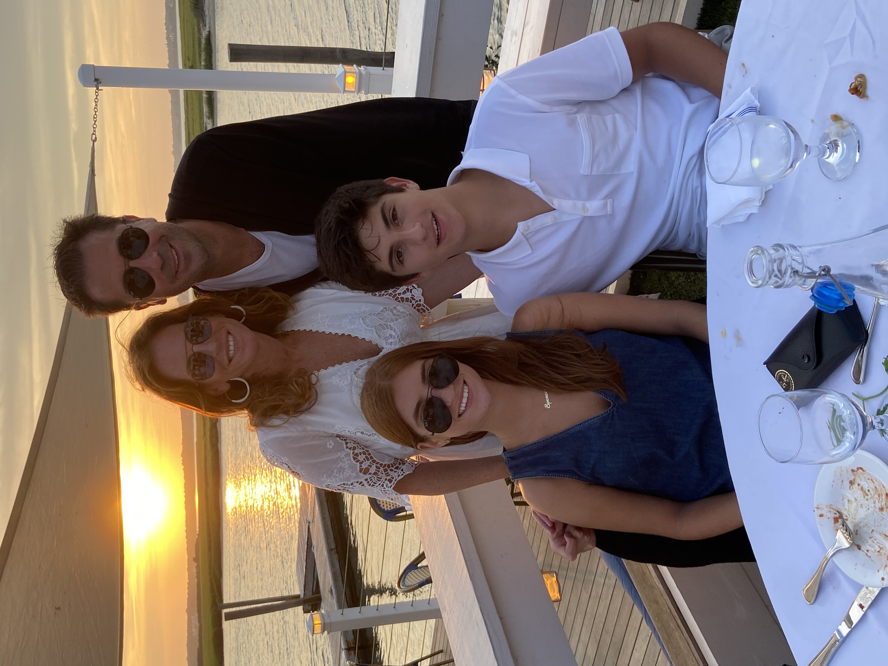

I am currently a sophomore at the University of Wisconsin-Madison, pursuing a major in Marketing in the Wisconsin School of Business and a certificate in Digital Studies
I am from New York City where I live with my mom, dad, and younger brother. I went to high school downtown in Chelsea where I took the subway to school everyday.I enjoy baking, exercising, and watching TV. In my free time I enjoy spending time with my friends, relaxing, making tik toks and going on adventures. I am also a big foodie.
1. The best Activities to do in Wisconsin 2. The best food trucks in Wisconsin 3. The best restaurants in Wisconsin